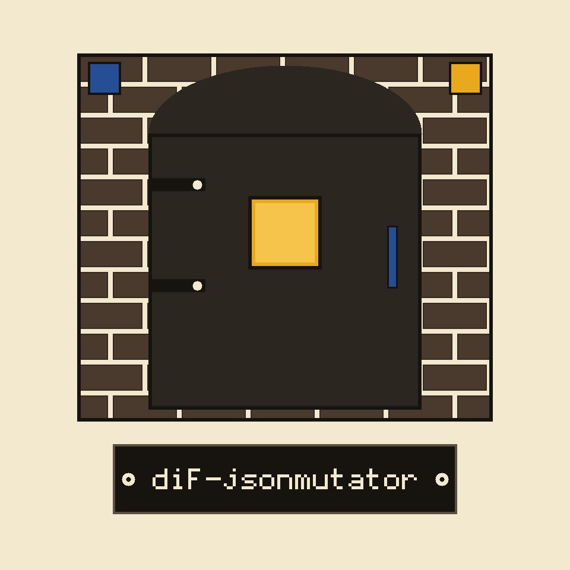

dif-jsonmutator: Venetian Glassmakers' Island Exile

Nothing Is Delivered For You
Standard Library Only
Length Never Changes
Not Finite, On Purpose
No Seed, No Second Chance
Ledger entry one, the errand
Give the program a JSON schema file and a JSON sample file, and it hands back mutated copies of the sample, steered by the schema's declared types. It writes them to a file when asked, and to the terminal when not. It delivers them nowhere else: no running program receives them, no address is contacted, no injection is performed by this code. That boundary is printed in this first entry, not saved for a caveat page. The live README's wider focused claim, that the tool injects fuzzed input into running applications and watches behaviour, is not what the code does, and this entry is the correction.
Ledger entry two, the bill of materials
Nothing outside the Python standard library is imported. The requirements file is a comment saying exactly that, so there is nothing to install beyond Python 3 itself. Less is genuinely true here, and the ledger states it proudly and plainly.
Ledger entry three, install and invocation
The clone line stands as the README prints it, correct, naming ShadowGuard-AI hyphenated: git clone https://github.com/ShadowGuard-AI/dif-jsonmutator. Then the run form: python3 main.py, the schema option with its path, the sample option with its path, and optionally the count and the output. Placeholder file names only. No real schema and no real sample payload appears on this page. A link for reference: the repository on GitHub.
Ledger entry four, controls in parser order
Schema: required, a path to a JSON file. Sample: required, a path to a JSON file. Iterations: a whole number, default 1, and values below 1 are refused with exit 1, a floor the README never mentions. Output: optional, a path; without it, results print. Help stands first in the README list and prints the help message.
Ledger entry five, how a walk through the sample proceeds
The mutator descends both documents together. Where the schema declares a type, that type's strategy set governs the value. Where a value sits in an object under a declared property, it follows that property's schema. Keys present in the sample but absent from the schema's properties keep their original values untouched. Keys declared in the schema but absent from the sample are never invented or added. Where an object schema declares no properties at all, each value passes through the untyped path instead. Where the schema names no type, dictionary values are visited one by one and scalar values come back unchanged. An unrecognised type name draws a warning and the original value is returned as it stood.
Ledger entry six, strings, by pattern class only
Eight strategies contend, one chosen at random per value: pad the tail with a small run of exclamation marks, force upper case, force lower case, reverse the characters, append a script injection pattern of the kind markup parsers are tested against, append a database tautology pattern of the kind query parsers are tested against, append a null byte, or replace the whole value with a fresh random lowercase string of five to fifteen letters. The classes are named here and no specimen of either injection pattern is printed.
Ledger entry seven, whole numbers
Seven strategies: nudge up by one to ten, nudge down by one to ten, scale by one to three, divide with whole number division by one to three, jump to the largest signed 32 bit value, drop to the smallest signed 32 bit value, or set to zero. The boundary pair is the point of the exercise, and this entry says so.
Ledger entry eight, numbers with fractions
Seven strategies again: shift up or down by a fraction under one, scale up modestly, divide by a modest factor, or abandon the finite altogether and set positive infinity, negative infinity, or not a number. These three values change what the output is, and the consequence is entered in entry ten, immediately after the small types.
Ledger entry nine, the small types and the array rule
A boolean is simply flipped, true to false and false to true, every time. A null stays null. An array keeps its length exactly: its items are mutated one for one against the item schema, an empty array stays empty, and no run ever tests a longer or shorter array than the sample carried. Two harder edges stand beside it: an array type whose schema declares no item schema comes back as an empty list whatever the sample held, and data that is not a list where an array is declared also comes back empty.
Ledger entry ten, output shapes and the strictness warning
▮To the terminal, each payload prints as its own indented JSON block, one after another. To a file, the whole batch writes as a single JSON array, indented. And the warning, at full size: infinity and not a number are written using the extended spellings Python accepts, which strict JSON parsers reject. That is deliberate fuzz output, and any visitor piping results into a strict consumer needs to know before the first run, not after the first parse error.
Ledger entry eleven, the repeatability gap
Nothing seeds the random choice anywhere in the program, and no seed option exists. The same schema and sample produce different payloads on every run, so a payload that provokes something interesting survives only if its output was saved. Reproduction from inputs alone is impossible, and the ledger says that here, in ink, without apology on the tool's behalf.
Final entry, licence
The README line, licensed under the terms in LICENSE, stands. Alongside it, the file fact: the repository LICENSE is the MIT License, its holder line joining the public pen name to a shortened form in parentheses and the account handle, the shortened form left exactly as found.
The preserved README record
 # dif-JSONMutator A command-line tool that takes a JSON schema and a JSON sample as input, and generates a stream of mutated JSON payloads based on the schema. Uses a combination of random value generation within type constraints and guided mutations based on common JSON vulnerabilities (e.g., integer overflows, string injections). - Focused on Dynamically generates and injects fuzzed input into running applications (e.g., web applications, APIs). Focuses on identifying vulnerabilities by observing application behavior under unexpected input conditions. Supports various fuzzing strategies, such as mutation-based and generation-based fuzzing. ## Install `git clone https://github.com/ShadowGuard-AI/dif-jsonmutator` ## Usage `python3 main.py --schema SCHEMA.json --sample SAMPLE.json` ## Parameters - `-h`: Show help message and exit - `--schema`: Path to the JSON schema file (required). - `--sample`: Path to the JSON sample file (required). - `--iterations`: Number of mutated payloads to generate (default: 1). - `--output`: Path to the output file to write the mutated payloads. If not specified, outputs to stdout. ## License Licensed under the terms in LICENSE.